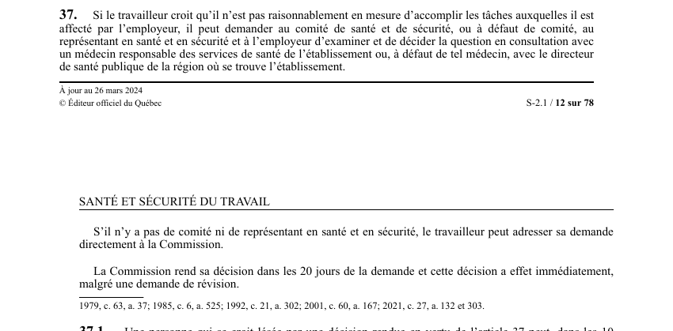

art-37-LSST : contestation de l'affectation par le travailleur
Recours ouvert au travailleur qui juge ne pas être raisonnablement en mesure d'accomplir les tâches de l'affectation qu'on lui donne : il fait trancher la question au lieu de subir l'affectation.
- Il s'adresse à l'employeur et au comité de santé et de sécurité ; s'il n'y a pas de comité, au représentant en santé et en sécurité et à l'employeur.
- L'examen et la décision se font en consultation avec le médecin responsable des services de santé de l'établissement, ou, à défaut de tel médecin, avec le directeur de santé publique de la région.
- S'il n'y a ni comité ni représentant, la demande va directement à la CNESST.
- La CNESST rend sa décision dans les 20 jours de la demande.
- Cette décision a effet immédiatement, malgré une demande de révision.
🌐 LegisQuébec · 📄 PDF officiel (page 12)
Texte officiel
Si le travailleur croit qu’il n’est pas raisonnablement en mesure d’accomplir les tâches auxquelles il est affecté par l’employeur, il peut demander au comité de santé et de sécurité, ou à défaut de comité, au représentant en santé et en sécurité et à l’employeur d’examiner et de décider la question en consultation avec un médecin responsable des services de santé de l’établissement ou, à défaut de tel médecin, avec le directeur de santé publique de la région où se trouve l’établissement.
S’il n’y a pas de comité ni de représentant en santé et en sécurité, le travailleur peut adresser sa demande directement à la Commission.
La Commission rend sa décision dans les 20 jours de la demande et cette décision a effet immédiatement, malgré une demande de révision.
Texte de l’article 37 LSST, extrait de la couche texte du PDF officiel (page 12), sans OCR ni retouche. La capture ci-dessous et le PDF font foi.
{kind=link}

Toucher l'image pour l'agrandir🔗 Ouvrir a cette page : LSST.pdf : page 12 · texte a jour au 26 mars 2024
Voir aussi
- art. 35 : affectation différée cessation travail · faculté : si l'affectation n'est pas effectuée immédiatement, le travailleur peut cesser de travailler jusqu'à ce que l'affectation soit faite ou que son état de santé et les conditions de son travail lui permettent de réintégrer ses fonctions conformément à l'article 32.
- art. 36 : rémunération pendant cessation de travail · droit : le travailleur a droit, pendant les cinq premiers jours ouvrables de cessation de travail, d'être rémunéré à son taux de salaire régulier, puis à l'indemnité de remplacement du revenu prévue par la Loi sur les accidents du travail et les maladies professionnelles.
- art. 37.1 : révision décision affectation · faculté : une personne qui se croit lésée par une décision rendue en vertu de l'article 37 peut, dans les 10 jours de sa notification, en demander la révision par la Commission conformément aux articles 358.1 à 358.5 de la Loi sur les accidents du travail et les maladies professionnelles.
- art. 37.2 : urgence révision décision affectation · obligation : la Commission doit procéder d'urgence sur une demande de révision faite en vertu de l'article 37.1 ; la décision rendue a effet immédiatement, malgré qu'elle soit contestée devant le Tribunal administratif du travail.
- 🔧 Modifié par : LMRSST · Article modificateur de la LMRSST.
- ↑ Loi : LSST
Pages qui pointent ici (9)
- art-132-LMRSST : modifie l'art. 37 LSST Recueil législatif
- art-179-LATMP : assignation temporaire d'un travail Recueil législatif
- art-35-LSST : cessation de travail si affectation différée Recueil législatif
- art-36-LSST : rémunération pendant la cessation de travail Recueil législatif
- art-37.1-LSST : révision décision affectation Recueil législatif
- art-37.2-LSST : urgence révision décision affectation Recueil législatif
- art-37.3-LSST : contestation devant le Tribunal administratif Recueil législatif
- art-48-LSST : droits applicables à la travailleuse qui allaite Recueil législatif
- LMRSST : Chapitre II : Modifications à la LSST Recueil législatif